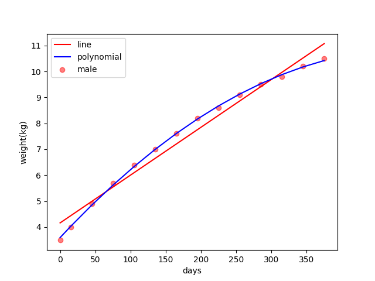

Polynomial Regression and Features-Extension of Linear Regression
Keywords: polynomial regression
Extending Linear Regression with Features1
The original linear regression is in the form:
where the input vector $\boldsymbol{x}$ and parameter $\boldsymbol{w}$ are $m$-dimension vectors whose first components are $1$ and bias $w_0=b$ respectively. This equation is linear for both the input vector and parameter vector. Then an idea come to us, if we set $x_i=\phi_i(\boldsymbol{x})$ then equation (1) convert to:
where $\phi(\boldsymbol{x})=\begin{bmatrix}\phi_1(\boldsymbol{x})\\phi_2(\boldsymbol{x})\ \vdots\\phi_m(\boldsymbol{x})\end{bmatrix}$ and $\boldsymbol{w}=\begin{bmatrix}w_1\w_2\ \vdots\ w_m\end{bmatrix}$ the function with input $\boldsymbol{x}$, $\boldsymbol{\phi}(\cdot)$ is called feature.
This feature function was used widely, especially in reducing dimensions of original input(such as in image processing) and increasing the flexibility of the predictor(such as in extending linear regression to polynomial regression).
Polynomial Regression
When we set the feature as:
the linear regression converts to:
However, the estimation of the parameter $\boldsymbol{w}$ is not changed by the extension of the feature function. Because in the least-squares or other optimization algorithms the variables or random variables are $\boldsymbol{w}$, and we do not care about the change of input space. And when we using the algorithm described in ‘least squares estimation’:
to estimate the parameter, we got:
where
Code for polynomial regression
To the same task in the ‘least squares estimation’, regression of the weights of the newborn baby with days is like:

The linear regression result of a male baby is :

And code of the least square polynomial regression with power $d$ is
1 | def fit_polynomial(self, x, y, d): |
The entire project can be found The entire project can be found https://github.com/Tony-Tan/ML and please star me.
And the result of the regression is:

The blue regression line looks pretty well comparing to the right line.
References
1. Bishop, Christopher M. Pattern recognition and machine learning. springer, 2006. ↩